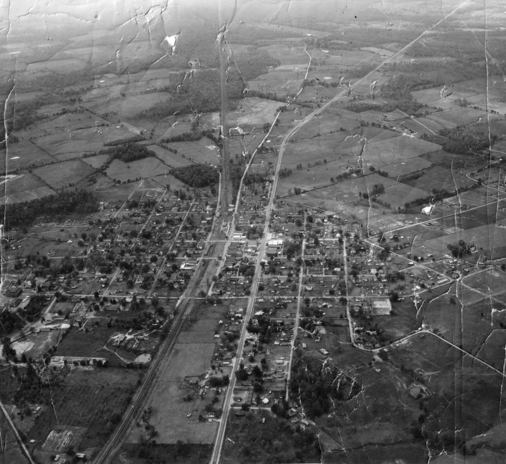

18 researched topic stories, each told the Repository way: the story with dates, what critics and residents said, and what the record actually shows — gaps named, not filled. Full sourced write-ups live on cabotlore.org.
Timeline — Cabot at a glance
Drawn from the City of Cabot's published history page and the Repository's topic research. Where sources disagree (the Camp Nelson reburial date), the disagreement is carried, not resolved.
Mayors of Cabot
Compiled from public sources only. Confidence notes are part of each entry — where the record is a gap, the gap is shown.
Photographs
Historic photographs of Cabot and its people from the Encyclopedia of Arkansas, shown with the caption and credit exactly as published. Photographs remain the property of their credited holders; any credited holder may have a photo removed on request. Full gallery (110 photos) on the website.
Ask a question
Questions are answered from the corpus. Draft answers are generated from the story texts on this device and stay labeled DRAFT — NOT YET APPROVED until Corey approves them. Nothing here publishes anywhere.
Contribute
Memories, photographs, documents, oral-history leads. Submissions land in a review queue and are reviewed before anything is posted — credited the way you specify.